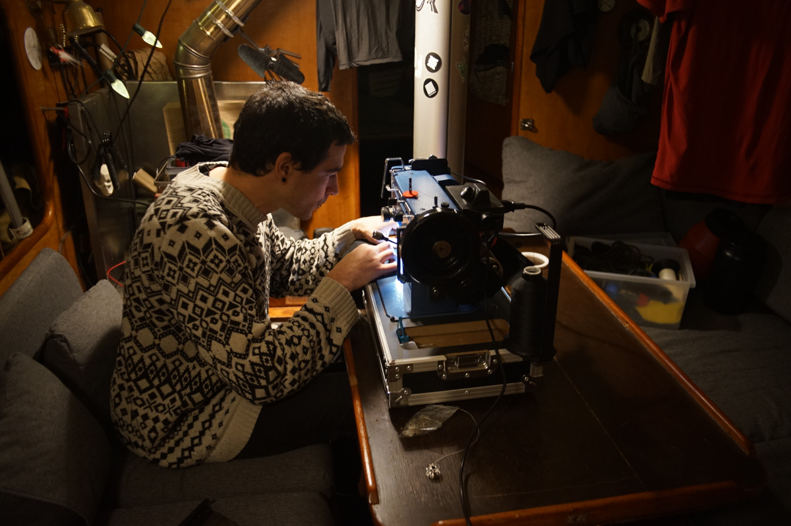
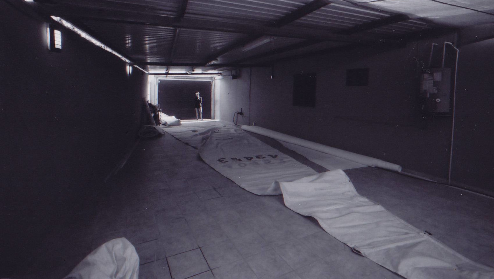

sewing

There are plenty of sewing projects to do on a boat. We carry a sewing awl (Speedy Stitcher) to make quick repairs without a machine. Inside the body, there is space to hold a fair quantity of thread. We use it to repair heavy canvas and sails.
The Speedy Stitcher comes with diamond point needles, and heavy waxed thread. It sews a perfect lock stitch just like a sewing machine. With it, we're repaired our sails, our backpacks, and our boat canvas.
To make more complex projects we use a sewing machine. We've owned 2 machines, the first(secondhand from a friend, acquired in 2021) was nothing special, we couldn't even go in reverse with it, but it did basic stitching and worked quite well, plus it came with a briefcase which helps to protect it against moisture and corrosion. We used it to make our mini dodger and boom tent. In December 2023 we parted with our old sewing machine and got a Sailrite Ultrafeed LSZ sewing machine to be able to do more heavy duty projects (see upholstery).
{kind=link}
Prior to owning a sewing machine ourselves, during our circumnavigation of the Pacific, we often borrowed our friend's machine. We've also had other friends graciously re-stitch our canvas, at no cost — whenever possible, we adopt a pay-it-forward strategy when helping others, inspired by all who have come to our aid in the past(mentorship, tool-lending, making small repairs, etc). Borrowing worked for a long time for us, owning a machine is not always necessary; good machines are expensive, heavy and take up a lot of room aboard.
Repairing sails aboard a boat is possible, but difficult. Tables on smaller boats are too short and narrow, and the space makes it too hard to lay panels flat. For such repairs, we try and seek out outside spaces to do the work. While in Minamiise in Japan, the harbourmaster let us use the yatch club's loft, as well as their machine to fix our headsail.
{kind=link}
In 2026, we began learning to make our own clothes.
{kind=link}
Other useful sewing materials we have onboard include
- White and black UV polyester thread
- Waxed thread
- Webbing(of varying widths)
- Long and Stray bits of fabric
Acrylic, polyester, cotton, canvas, linen, dacron, etc. - Basting tape
To fasten fabric together prior to sewing, also possible to do using pins and binder clips. - Sewing awl (or speedy stitcher)
- Sail and regular needles
- Dacron and Ripstop (sail repair tape)
- Zippers
- Quality shears
- Various rulers
Square, long metre ruler, tailor tape measure, etc. - Seam ripper
- Steam iron
We found a travel size steam iron at a thrift store, it is perfect for helping to form seams prior to sewing(like when making french seams). - Thread marker(white chalk pencils for dark fabric)
- Safety pins and/or regular pins
- Binder clips(assorted sizes, many very small ones)
- Buttons
- Various fasteners(twist lock, snap, grommets)
Each fastened has its own use, and each require a special tool for installation. We've managed to install ours without expensive tools.